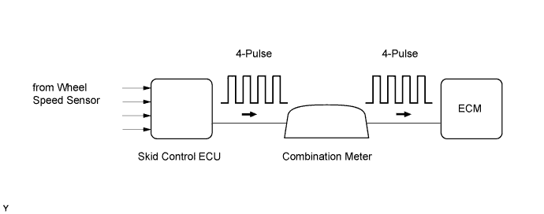
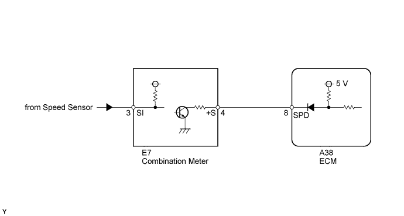
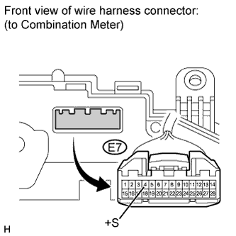
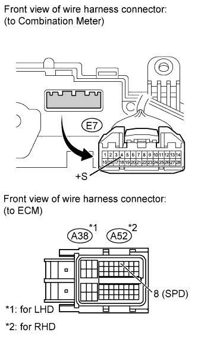

DTC P0500 Vehicle Speed Sensor "A" |

| DTC Detection Drive Pattern | DTC Detection Condition | Trouble Area |
| Vehicle being driven | Conditions (a), (b), (c) and (d) are met for 8 seconds or more (2 trip detection logic): (a) Engine coolant temperature is more than 70°C (158°F). (b) Engine speed is between 1500 and 4000 rpm. (c) Vehicle is running. (d) No speed signal is input to the ECM. |
|
| Drive vehicle during fuel-cut operation | Conditions (a), (b) and (c) are met for 5 seconds or more (2 trip detection logic): (a) Vehicle is running. (b) During the fuel-cut operation. (c) No speed signal is input to the ECM. |
| DTC No. | Data List |
| P0500 | Vehicle Speed |

| 1.CHECK OPERATION OF SPEEDOMETER |
Drive the vehicle and check whether the operation of the speedometer in the combination meter is normal.
|
| ||||
| OK | |
| 2.READ VALUE USING INTELLIGENT TESTER (VEHICLE SPEED) |
Connect the intelligent tester to the DLC3.
Turn the engine switch on (IG) and start the engine.
Turn the tester on.
Enter the following menus: Powertrain / Engine / Data List / All Data / Vehicle Speed.
Drive the vehicle.
Read the value displayed on the tester.
|
| ||||
| OK | ||
| ||
| 3.CHECK HARNESS AND CONNECTOR |
 |
Disconnect the combination meter connector.
Measure the voltage according to the value(s) in the table below.
| Tester Connection | Switch Condition | Specified Condition |
| E7-4 (+S) - Body ground | Engine switch on (IG) | 4.5 to 5.5 V |
|
| ||||
| OK | |
| 4.CHECK COMBINATION METER ASSEMBLY (SPD SIGNAL WAVEFORM) |
 |
Move the shift lever to N.
Jack up the vehicle.
Check the voltage between the terminal of the combination meter and the body ground while a wheel is turned slowly.
| Tester Connection | Switch Condition | Specified Condition |
| E7-4 (+S) - Body ground | Engine switch on (IG) | Voltage generated intermittently |
| Test result | Proceed to |
| OK | A |
| NG (w/ Multi-information Display) | B |
| NG (w/o Multi-information Display) | C |
|
| ||||
|
| ||||
| A | |
| 5.CHECK HARNESS AND CONNECTOR (COMBINATION METER ASSEMBLY - ECM) |
 |
Disconnect the combination meter connector.
Disconnect the ECM connector.
Measure the resistance according the value(s) in the table below.
| Tester Connection | Condition | Specified Condition |
| E7-4 (+S) - A38-8 (SPD) | Always | Below 1 Ω |
| Tester Connection | Condition | Specified Condition |
| E7-4 (+S) - A52-8 (SPD) | Always | Below 1 Ω |
| Tester Connection | Condition | Specified Condition |
| E7-4 (+S) or A38-8 (SPD) - Body ground | Always | 10 kΩ or higher |
| Tester Connection | Condition | Specified Condition |
| E7-4 (+S) or A52-8 (SPD) - Body ground | Always | 10 kΩ or higher |
|
| ||||
| OK | ||
| ||